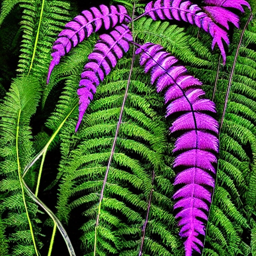

Description: The Gloomsprout Fern is a unique fern species that flourishes in the dimly lit understory of Chalupax's jungle. Its fronds are a deep shade of violet, and they exude a faint, musky aroma. They are typically found in areas where sunlight struggles to penetrate the thick foliage, such as deep ravines or beneath dense tree canopies. Gloomsprout Ferns have a relatively short lifespan, typically lasting only a few Chalupaxian years before undergoing senescence and being replaced by new growth.
Planet: chalupax